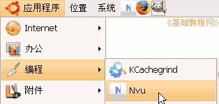
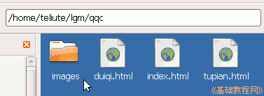
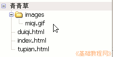
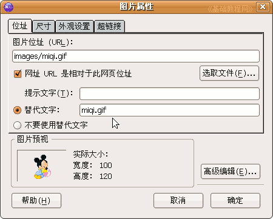

Nvu 操作基础教程
作者：Teliute 来源：基础教程网
五、插入图片 返回目录 下一课在Nvu中可以很方便地插入图片，只要把图片复制到站点中，然后拖到网页里面就可以了，下面我们来看一个练习；
1、启动Nvu
1）点左上角菜单“ 应用程序－编程－Nvu”，就可以启动Nvu程序；

2）第一次启动时会出来两个小面板，点关闭即可，然后进入程序窗口中；
3）点菜单“格式－页面标题”，修改标题为“插入图片”，然后点菜单“文件－保存”命令，以“tupian.html”保存到qqc文件夹中；
2、复制图片
1）最小化Nvu窗口，点上边的菜单“位置－主文件夹”，找到自己的站点文件夹qqc，在里面新建一个名为 images 的文件夹，这个里面用来存放图片；

2）在图片文件夹里找一个图片，复制到images文件夹里，注意文件名要英文的，
3）再回到Nvu窗口中，点网站栏的“刷新”按钮，刷新一下青青草站点，看一下images文件夹，

这儿点两下文件夹前面的加号也可以起刷新作用；
4）把images里面的图片文件miqi.gif，拖到右边的窗口里面，就可以插入进来了；
保存一下文件，点“浏览预视”按钮，看一下图片效果；
5）也可以用菜单“插入－图片..”命令，点“选取文件”按钮后，输入替代文字；

6）需要注意的是，图片要先复制到images文件夹里，另外必须使用英文文件名；
本节学习了在Nvu中插入图片的基本方法，如果你成功地完成了练习，请继续学习下一课内容；
本教程由86团学校TeliuTe制作|著作权所有
基础教程网：http://teliute.org/
美丽的校园……
转载和引用本站内容，请保留版权信息和本站链接。